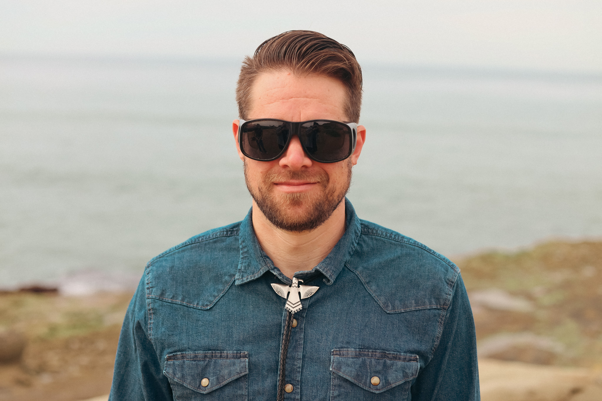
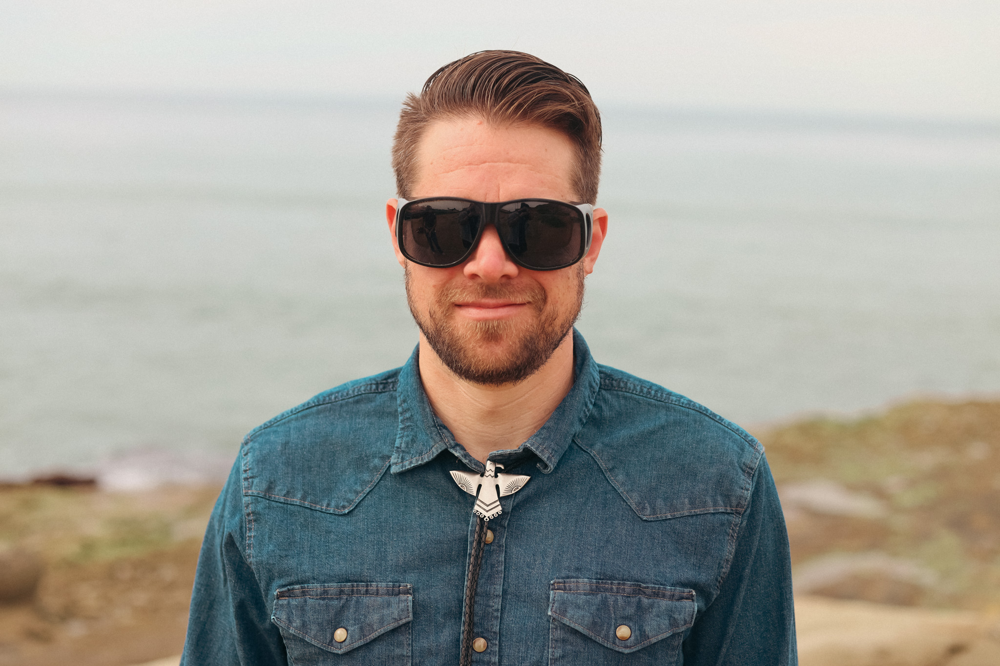

Michael & Valerie
Honoring those we’ve lost, the resilience they taught us, and the determination to ride on.
How we met
Mike and Val met through mutual bike friends after Valerie texted Raemy—who had ridden with her on the first day of Pilgrimage 2025 and was racing the Santa Fe Century. Raemy casually mentioned her husband, David, and a guy named Mike. Valerie replied with the 👀 emoji, jokingly asked if he was single, and even sent Raemy a photo saying, "Show this to Mike"—he later texted Valerie, "Should we get married?" (so they did, 2 weeks later, JUST KIDDING 😅). They actually met in Flagstaff, rode bikes together, and officially decided to couple-up, Love Island style.
About Mike
Mike is what happens when a math nerd grows up and decides hills are just "applied suffering."
He earned his Ph.D. in Applied Mathematics from the University of Arizona, which means he voluntarily chose to spend years solving problems most people avoid. His work blends applied math, fluid dynamics, and machine learning, and one of his biggest career wins was landing a role at Los Alamos National Laboratory, a world-class research lab where "hard problem" is basically the job description. Check out his papers and research on Google Scholar.
He's also taught math at Northern Arizona University and Western Wyoming Community College, standing in front of rooms of students and saying things like, "Don't worry, this makes sense," and actually proving it.
But let's be honest, Mike's real long-term relationship is with bikes. He's been riding since he was three years old, which means balance, speed, and questionable life choices on two wheels have been part of the plan from the start. He's raced local road, gravel, and mountain bike events, logged some good training miles, and once rode a completely unnecessary 170 miles in a single day.
He's also ridden up Mount Evans, one of the highest paved climbs in North America, and naturally he chose to do it in the most unnecessary way possible. On a whim he flew into Denver, rented a car, slept a luxurious two hours in the car like a determined raccoon, then rented a bike and decided it was now or never. He made it to the top (over 14,000 ft), just in time for a massive thunderstorm, only to get hailed on the entire way down.
For Mike, cycling is basically field research: steady effort, problem-solving mid-ride, staying calm when things get uncomfortable, and refusing to quit just because your legs hurt and you are so tired that when you blink it feels like you just took a nap.
About Val
Valerie is the heart behind Tour de America — a rider driven not just by miles, but by meaning.
She was an athlete growing up, then took what she jokingly calls a "10-year retirement" from sports before finding her way back — stronger, more grounded, and more determined than ever. Last year, she returned to competition at the U.S. Masters Swimming Summer Nationals, swimming national qualifying times and rediscovering the joy of pushing her limits.
Off the bike and out of the pool, Valerie works in finance as a fintech writer, in a role she's deeply grateful for, with a boss who has believed in her, supported her growth, and helped her step fully into this version of herself. That support — along with the encouragement of friends, family, and community — is a big part of why she's here.
Tour de America represents more than a ride. It's a reflection of second chances, quiet confidence rebuilt over time, and gratitude for the people who helped her stand back up. Valerie's story isn't about always being fearless — it's about coming back, trying again, and proving to herself that she's capable of more than she once believed.
Photo gallery

 
